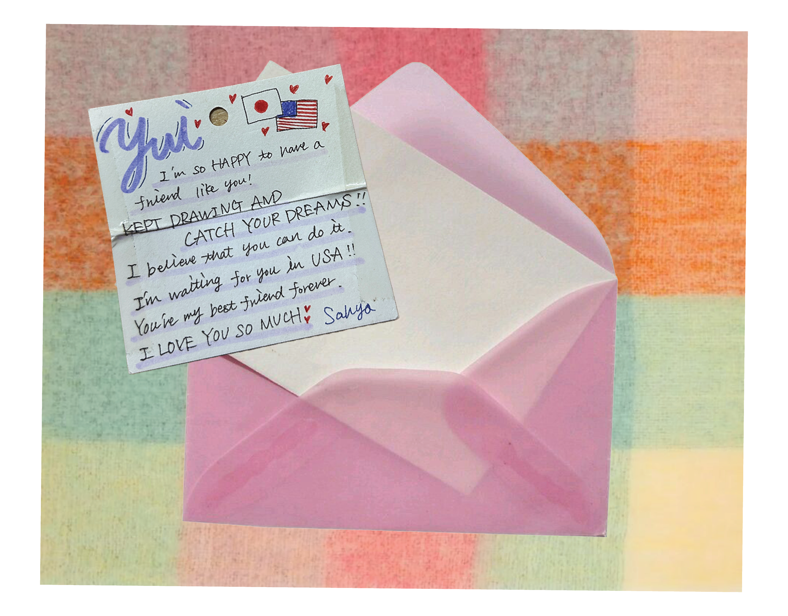
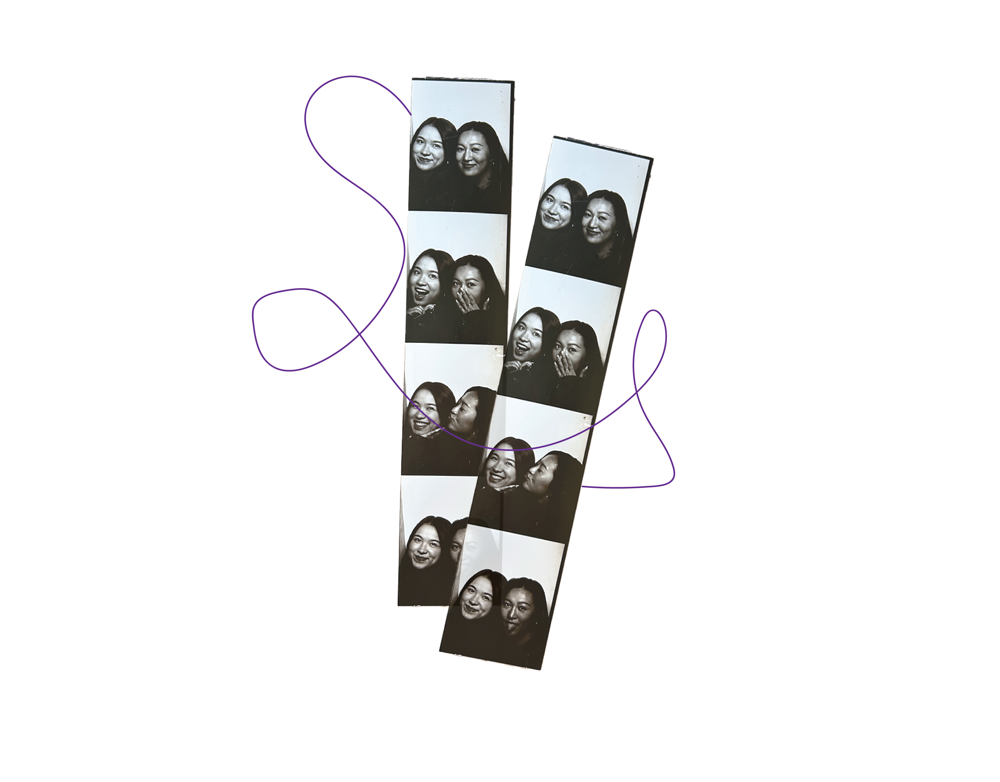
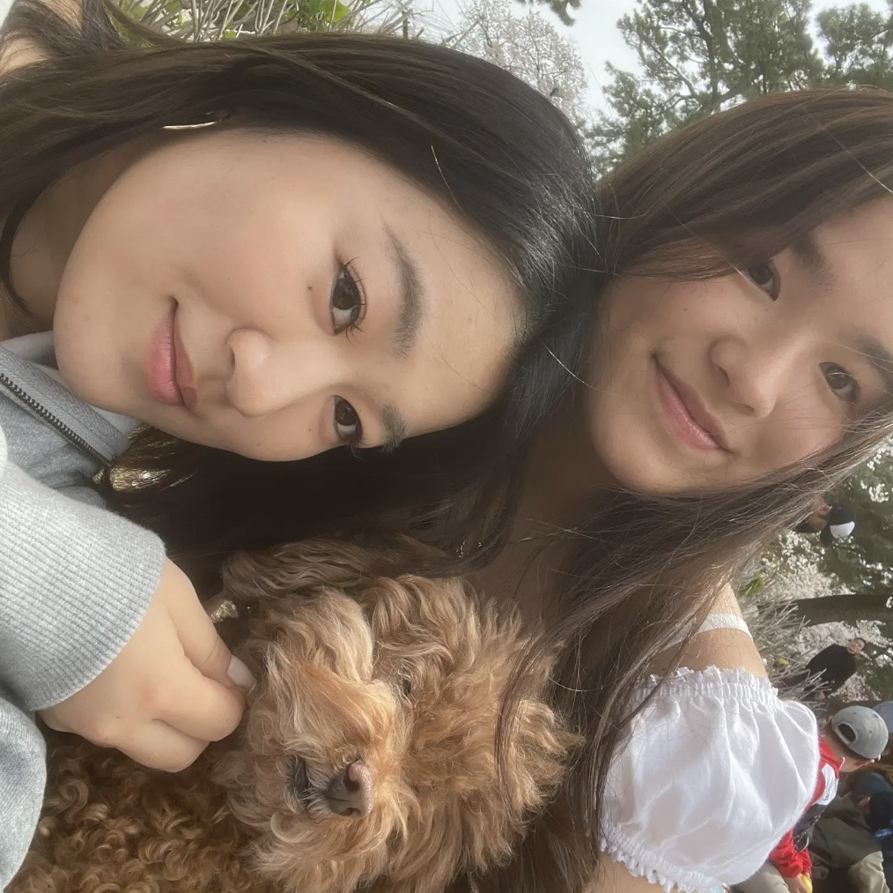

Letters
From
Who
Letters
From
Who
From: sahya ✿, To: yui ୭ৎ
photobooth  the letter i wrote to my friend when she left japan for california
さあやへ、
こんな日が来るとは思ってなかった！本当に渡米しちゃうんだね。 正直言えば日本語で手紙書くの苦手なんだけど沙彩のためだったらぜんぜん書く笑笑 すんごく遡るけど6年前芦国で会ったのまじで運命だった思う。席も前後だったし、家も近かったし、ほんまはうむたんのことを待って帰ろうって思ってたけどB組遅すぎて先に帰ろうとしたらまさかバス停で会うとは。。。w その日からうちらいっっっっっぱい思い出作ったね。私にとって沙彩がいない人生考えられないよ。ずっと沙彩がいてくれたこそ今の由になってると思う。中1の時からずっと自分の夢に向かって行動し続けた沙彩を見てていつもすごいなって思ってたよ。あと成長したねって(笑泣き) 高校の時学校離れても毎週毎週沙彩と会うのが由の中ではいちばんの楽しみだった。しょうもない話しもいっぱいしたし、バカ笑いもしぬほどしたし。それは全部由にとって一生残る大切な想いです。自然に笑顔が出てくるのはいつも沙彩といる時だったよ。いつもママと話してるけど沙彩は本当にスペシャルな子だから世界に出て思いっきり輝いてほしいのよ！この世の中で沙彩よりパワフルでキラキラしてる人ほんまにいないと思う。そんな沙彩を大親友と呼べるのが誇りだよ！ 世界のどこに行っても由は沙彩のことをずっと応援し続けるから♡ 一緒に夢を実現して成功しようね。 最後に、、、アメリカで気をつけてね！沙彩だったら確実に大丈夫だと思うけどそれでもアメリカ時々変な人出てくるから。。なんかあったらニューヨークから急速で飛びます。
"I never thought a day like this would come! You're really going to the U.S.! To be honest, I’m not great at writing letters in Japanese, but for you, I’ll write one any day . This goes way back, but I seriously think it was fate that we met at Ashikuni six years ago. Our seats were next to each other, our houses were close... Honestly, I was planning to wait for Umutan to head home together, but Class B was taking too long, so I decided to leave first—and then we just happened to meet at the bus stop… lol. From that day on, we made so many memories together. I can’t imagine life without you, Saya. I really believe I am who I am today because you were always there for me. Ever since first year of junior high, I’ve been so amazed watching you keep working toward your dream. And… you’ve grown so much too (tears and laughter). Even when we went to different high schools, meeting up with you every week was honestly the thing I looked forward to the most. We talked about the most random stuff, laughed our heads off… and all of those moments are memories I’ll treasure for the rest of my life. Being with you always brought out my natural smile. I always tell my mom—Saya really is a special person, so I want you to go out into the world and shine as brightly as you can! I truly believe there’s no one else out there who’s as powerful and dazzling as you. I’m so proud to be able to call someone like you my best friend. No matter where in the world you are, I’ll always be cheering you on ❤ Let’s make our dreams come true and succeed together!"
